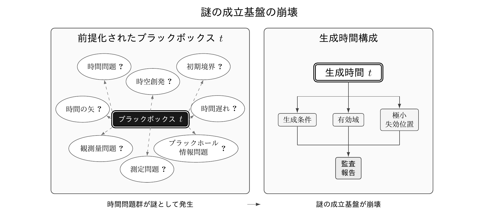

LCTR 解説
時間の謎は解けたのかLCTRによる時間生成と謎の消滅
時間参照の局所比較理論（LCTR）は、物理法則で使う時間を、非時間的な物理入力から生成する。時間が成立する条件と、その条件が失われる位置を明らかにすることで、未生成時間への依存によって成立していた謎の基盤を取り除く。


時間を使う前に、その成立を問う
物理法則の計算が成功することと、その計算で使う時間が物理的に成立することは、別の問題である。LCTRは、時間変数を法則へ投入する前に、その時間内容と物理的成立根拠を構成することを求める。
ファインマンは『ファインマン物理学』第一巻第五章で、自身を含む「私たち」が時間を辞書的な意味ではおそらく定義できないと述べ、時間をどのように測るかへ議論を移した。LCTRは、そこで残された時間の成立の問題に対し、物理的な材料と関係から時間参照を構成する条件を与える。
時計、時間、加齢を結ぶ説明では、何が実証されているのか
時計の表示差や率の差、物理担体から独立した「時間そのもの」の伸縮、生命過程の変化は、異なる対象についての主張である。時計について得られた実験結果を加齢の説明へ接続するには、その接続を支える物理関係と、証拠が直接支持する範囲を明らかにする必要がある。LCTRは、時計から時間そのものへ、さらに生命過程へと説明対象が移る各段階を監査する。
「時間は存在しない」と「時間そのものが伸縮する」という言明にも、対象の同定が必要となる。同じ時間内容と適用域について述べているなら両者は両立しない。異なる対象について述べているなら、何を指す「時間」なのか、その切替を明示する必要がある。
時間を生成すると、謎はどうなるのか
LCTRの構成は、装置の表示や対象の状態差を記録として保持し、比較に必要な情報がどこで結び付くかを、時間量を用いずに確定するところから始まる。そこから、時間内容の同一性、前後関係、比較可能性と比較不能性、線形順序、実数値による時間表現の成立条件を順に与える。この構成によって、LCTRは物理時間を成立条件から定義する。
時間を構成するための材料や関係が成立しない場合、あるいは生成条件が失われた場合、その条件に依存する時間表現は成立しない。LCTRは、この不成立を、何が不足し、どの条件が最初に失われたのかという形で特定する。
この生成によって、未生成時間への依存を成立条件とする謎は、独立した問題としての成立根拠を失い、消滅する。その後に取り組む課題は、時間表現の成立条件、使用できる範囲、失効位置、修復の順序、および次に取得すべき証拠の確定となる。
連続と微分に「動作保証書」を与える
LCTRは、物理モデルで使う連続近似と微分形式に、使用条件と失効原因を伴う「動作保証書」を与える。どの範囲・尺度で使用でき、どの条件が最初に失われるのかを、時間生成の依存関係に沿って明らかにする。
微分方程式の予測が観測や実験と合わない場面では、式が用いる時間表現、連続近似、微分形式の成立条件も調べる必要がある。LCTRは、これらの条件を監査対象として明示し、成立する範囲、失効する位置と理由、証拠が足りず判定できない箇所を区別する。
監査結果は、修復すべき条件と、修復後に再生成または再計算すべき対象を示す。これにより、連続近似と微分形式の適用限界に直面したとき、原因の調査と修復を、条件・証拠・依存関係に基づく手順として進められる。
時間の矢や量子重力の時間問題との関係
LCTRは、量子重力の時間問題を、法則で時間を使用する資格の問題へ変更する。時間の矢については、生成済みの時間表現に向きを与える後続の条件として定める。宇宙の初期境界、ブラックホール情報問題、観測量、量子測定記録、時空創発に関わる時間記述も、各時間内容の生成条件と有効域へ接続する。
72資料の監査と、既存成果の再使用
LCTRは、使用する時間内容を非時間的な物理入力から成立させる完全な生成経路を欠いたまま、その時間内容を法則の演算や成果の導出に用いることを「原始時間入力」と呼ぶ。
この基準で、古代から現代までの理論、実験、計量標準、工学にまたがる代表的72資料を監査した。全72資料に原始時間入力が残り、使用する時間内容の全体を非時間的な物理入力から生成した資料は0件だった。
LCTRは、既存の数学的・実験的・工学的成果を、それぞれの証拠が支持する範囲で保持する。そのうえで時間内容と成立根拠を生成し、有効域と失効位置を監査することで、既存成果を安全に再使用できる範囲を定める。